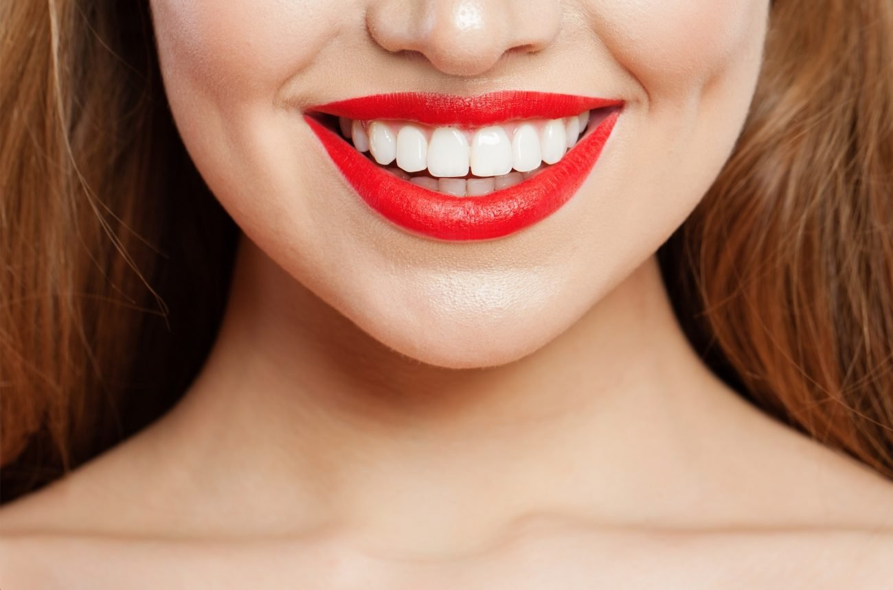

Niezła podpowiedź: hollywoodzki uśmiech bez wizyty u dentysty
Niestety, nie każdy ma szczęście mieć idealne zęby. Zabiegi stomatologii korekcyjnej, które korygują niedoskonałości zębów, są bardzo kosztowne. To samo można powiedzieć o nowoczesnych protezach.
Na szczęście mamy teraz XXI wiek i piękny uśmiech nie musi być uzyskiwany za pomocą drogich i bolesnych zabiegów. W 2021 r. w Stanach Zjednoczonych stworzono unikalne wyjmowane licówki o nazwie Shiny Dentes.

Dzięki takim licówkom każdy może w jednej chwili stać się posiadaczem wspaniałego uśmiechu. Wyjątkowa innowacja Shiny Dentes jest wspaniałym rozwiązaniem, które łączy w sobie funkcje wyrównywacza i licówki.
Urządzenie jest produkowane w fabryce przy użyciu wysoce precyzyjnych narzędzi i innowacyjnej technologii. Jest to niezaprzeczalną zaletą w porównaniu z innymi licówkami, które są tworzone metodami rzemieślniczymi w konwencjonalnych laboratoriach dentystycznych. Ultracienka, mocna i wygodna konstrukcja jest możliwa do zainstalowania w domu.

Procedura jest gwarantowana jako bezbolesna i pozwoli Ci pochwalić się pięknym, białym uśmiechem osobom z Twojego otoczenia. Ponadto regularne noszenie aparatu Shiny Dentes stopniowo koryguje wadliwy zgryz i pozwala na skuteczne wyrównanie zębów, podobnie jak w przypadku drogiego systemu aparatów ortodontycznych.
Noszenie zdejmowanego modelu jest skuteczne w przypadku następujących problemów:
- szczęka z zębami, które są krzywe i oddalone od siebie;
- brak lub złamanie zębów;
- wyszczerbione płytki nazębne;
- przebarwione zęby;
- obecność starych, sczerniałych wypełnień;
- wadliwy zgryz, zęby wymagające wyrównania;
- szczęka z nadmiernie małymi zębami.
Nakładki są wykonane z wysokiej jakości materiału polimerowego, który jest z natury elastyczny.
Rozmiar konstrukcji elastycznej jest uniwersalny. Posiada właściwości bezpiecznego dopasowania, dopasowując się do szczęki użytkownika.
Urządzenie charakteryzuje się wysoką wytrzymałością i odpornością na działanie barwników. Jedzenie, picie czerwonego wina, czarnej herbaty, kawy lub palenie tytoniu nie wpływa na wygląd licówek.

Konstrukcja ma specjalną zdolność łączenia się z powierzchnią zęba, co zapewnia doskonałe odwzorowanie zębów. Osoby noszące licówki Shiny Dentes, nie odczuwają żadnego dyskomfortu; przestają odczuwać płytki po 10 minutach od założenia licówek.
Jakie są korzyści z wyboru Shiny Dentes?
- Płytki mogą być noszone przez przedstawicieli obu płci;
- Można je szybko i łatwo zainstalować w domu;
- Nie trzeba szlifować zębów przed wprowadzeniem;
- Brak dyskomfortu w jamie ustnej;
- Zdolność do jedzenia i picia;
- Brak ciemnienia zębów z powodu przebarwień wywołanych jedzeniem lub napojami;
- Odporność na składniki aktywne zawarte w dymie papierosowym;
- Przystępna cena i wysoka jakość.
Ważna uwaga!
Oryginalne licówki Shiny Dentes można kupić wyłącznie za pośrednictwem oficjalnego formularza zamówienia. Na rynku jest wiele podróbek i kopii tych oklein. Oszuści sprzedają tanie chińskie repliki Shiny Dentes po kusząco niskich cenach.
Specjalnie dla czytelników Lifehackera zamieściliśmy w artykule oficjalny formularz zamówienia, który możesz wypełnić, aby bezpiecznie kupić w 100% oryginalny produkt, który spełni wszystkie podane wymagania.

Komentarze ()
Kto wypróbował te licówki, czy są naprawdę dobre?
OdpowiedźSpróbowałem! Straciłem przednie zęby w wyniku bójki. Moja praca wymaga nieskazitelnego uśmiechu, więc zakup Shiny Dentes stał się dla mnie prawdziwym wybawieniem. Zamówiłem poprzez oficjalny formularz. Cena była po prostu śmieszna w porównaniu z kwotą żądaną za specjalistyczną protezę. Jestem zadowolony z licówek - moje usta wyglądają przyzwoicie, nie mam nieprzyjemnych odczuć, nie mam problemów w pracy.
OdpowiedźJa również tutaj trafiłam) Ze względu na rzadkie, szeroko rozłożone w szczęce, drobne zęby miałam dużo kłopotów. Dzięki zakupowi licówek wreszcie mogłam pokazywać piękny uśmiech przy każdej okazji. Mocowanie licówek jest łatwe. Po ich założeniu moja szczęka z nimi wygląda całkiem naturalnie. Kiedy się uśmiecham, otrzymuję komplementy od bliskich przyjaciół i współpracowników. Żałuję, że wcześniej nie nabyłam tak cennego urządzenia.
OdpowiedźNiech ktoś przyśle mi zdjęcie!
OdpowiedźOto zdjęcie, wyglądają bardzo naturalnie)

OdpowiedźMama pracuje w sektorze społecznym i codziennie ma kontakt z ludźmi, więc oprócz nienagannego wyglądu powinien być też uśmiech. Zgodzicie się ze mną, że trudno jest się uśmiechać, mając problematyczne zęby, i to w czasie, gdy przygotowuje się do wymiany mostu i 2 protez. Aby poczuła się mniej skomplikowana, założyliśmy jej licówki zastępujące uśmiech Shiny Dentes. A teraz mama ma olśniewający hollywoodzki uśmiech. Mówi, że można wygodnie jeść w płytkach, płukać usta, nie ma absolutnie żadnego dyskomfortu. Moja mama ma licówki od 1,5 miesiąca, w tym czasie płytki nie ściemniały, są w doskonałym stanie. Ona jest szczęśliwa)
OdpowiedźLicówki te są niezłym rozwiązaniem, jeśli chodzi o poprawę uśmiechu. Trudno się z tym nie zgodzić. Nie ma jednak potrzeby przypisywania licówkom niecharakterystycznych zdolności, takich jak korygowanie zębów i zgryzu, a co więcej, nie należy porównywać licówek z aparatami ortodontycznymi pod względem funkcjonalności. Mogą się one wyrównać, ale nie tak skutecznie. Nieprawdziwe stwierdzenia dotyczące korygowania wad zgryzu służą jedynie jako antyreklama wspaniałego produktu, który jest przeznaczony do czegoś zupełnie innego.
OdpowiedźJuż dawno temu słyszałam o zdejmowanych licówkach - są one rzeczywiście dobrą alternatywą dla drogiego wybielania zębów. Ale jakoś nie odważyłam się na zakup, ale miesiąc temu zdecydowałam się na zamówienie zdejmowanych licówek. Dotarły one dość szybko, za co chciałabym podziękować. Byłam bardzo zadowolona z jakości, a zamówienie złożyłam za pośrednictwem oficjalnego formularza zamówienia. Okleiny te dopasowałam bardzo szybko, nie było żadnych problemów. Pasują idealnie, nie powodują dyskomfortu w ustach. Wszystko jest doskonałe. Są one dość łatwe do usunięcia. Wysoka ocena!
OdpowiedźPracuję w sektorze państwowym i na co dzień mam do czynienia z wieloma ludźmi. Moje zęby są moim kompleksem od dzieciństwa. Moi rodzice nie próbowali naprawiać moich dziecięcych zębów i po prostu je posrebrzyli. Na wszystkich moich zdjęciach z matur zamiast zębów mam czarne kikuty, myślę, że nie ma co mówić o wyśmiewaniu przez rówieśników. Ale zęby trzonowe wyrosły i też mnie nie zadowoliły: kły trochę nie pasowały i wyparły dwa przednie zęby, kolor szkliwa był żółtawy, jednym słowem, nie był to hollywoodzki uśmiech. Mój dentysta doradził mi zastosowanie zdejmowanych licówek, ponieważ są tanie, a efekt jest szybki, nie tak jak w przypadku noszenia aparatu ortodontycznego przez rok, a nawet dwa, i płacenia za to dużych pieniędzy. Postanowiłam poeksperymentować i od roku noszę je i cieszę się: moje zęby są piękne i białe, licówki nie powodują dyskomfortu, a ich pielęgnacja jest łatwa.
OdpowiedźPrawdziwe licówki są dość drogie i nie każdy może sobie na nie pozwolić, ale okazuje się, że istnieje dobra alternatywa - zdejmowane licówki Shiny Dentes. Wystarczy je założyć, a uśmiech w ciągu sekundy staje się niemal idealny. Licówki są dość wygodne, łatwo się je zakłada (na początku trzeba się do nich przyzwyczaić), ale są wystarczająco mocne. Ogólnie rzecz biorąc, nie żałuję, że je kupiłam, będę je nosić do czasu założenia stałych licówek w klinice. Przy okazji, jeśli często nosisz Shiny Dentes, zęby stają się gładsze, sądząc po moich własnych doświadczeniach. Moim zdaniem cena jest całkiem do przyjęcia, proszę zwrócić uwagę
OdpowiedźCzy może mi Pani powiedzieć, czy te licówki dobrze się trzymają na zębach? Nie odpadają?
OdpowiedźNie, nie odpadają - nie ma z nimi żadnego problemu)
OdpowiedźZdecydowanie korzystniejsza cena w porównaniu z licówkami stałymi. Piękny, bielszy uśmiech i równe zęby można uzyskać za stosunkowo niewielką kwotę. Jednak z jakiegoś powodu zawsze wydawało mi się, że wyjmowane licówki są naprawdę dość niewygodne w ustach, więc nie można się do nich przyzwyczaić tak jak na przykład do aparatu ortodontycznego. Mówią jednak, że przy regularnym noszeniu można się do nich przyzwyczaić i przestać czuć w ustach, ponieważ są wykonane z wysokiej jakości materiału, który mi nie przeszkadza. Nie wiedziałam też, jak jeść z tymi licówkami. Z drugiej strony, wiele osób twierdzi, że jest to wygodne rozwiązanie bez żadnych problemów. Mimo wszystko sprawdzam je. Łatwo jest dbać o te licówki, a ponadto zęby mogą od nich odpoczywać przez pewien czas. Świetne jest to, że nie ciemnieją z upływem czasu od zabrudzeń po jedzeniu i napojach, ponieważ są wykonane z naprawdę dobrego materiału.
OdpowiedźMoje górne przednie zęby od dawna mają plomby i niejednokrotnie je wymieniałam, ale mimo to różnica w kolorze między zębami własnymi a materiałem wypełnienia jest zauważalna. Zdecydowałam się na zakup wyjmowanych licówek, dopóki nie zaoszczędzę pieniędzy na wysokiej jakości trwałe korony. Cena jest dość przystępna. Jakość jest dobra. Na początku noszenie ich nie było zbyt wygodne, ale szybko się do nich przyzwyczaiłam. Noszę" je w pracy. Nie drażnią moich dziąseł i nie mam problemów z dykcją. Są dobrze dopasowane, nie uciskają zębów. Można zakładać nawet w przypadku braku jednego zęba w uzębieniu. Piję wszystkie rodzaje napojów, w tym soki, kawę i herbatę - nie ciemnieją. Są łatwe w pielęgnacji. Kto ma wątpliwości, czy kupić, czy nie - polecam.
OdpowiedźJa również je zamówiłam. Łatwo się je zakłada i dobrze trzymają, więc nie muszę się martwić, że wypadną w najmniej odpowiednim momencie. Wyglądają one bardzo naturalnie i nie powodują uczucia dyskomfortu. Zakładam je, a mój uśmiech natychmiast staje się olśniewający. Wykonane z wysokiej jakości polimeru, nie plamią się od jedzenia i napojów, więc myślę, że będą służyć przez długi czas.
OdpowiedźTeraz mają taką zniżkę, po prostu ogień, tu jest oficjalny formularz zamówienia, 50% Wziąłem dużo droższe i kiedy oferty nie było...
Odpowiedź